Reviving and Customizing Motorcycles
A journey through motorcycle restoration and customization—reviving classics, tuning performance, and converting enduros into supermotos.
My Approach to Motorcycle Restoration:
Motorcycle restoration and customization have been pivotal aspects of my mechanical journey. My projects have ranged from simple repairs and maintenance to complete rebuilds and custom fabrications, focusing primarily on enduro bikes transformed into supermotos, though I've also ventured into restoring a classic cruiser. My work encompasses rebuilding engines, precision tuning of carburetors, and tackling complex electronics across motorcycles from the 1980s to modern 2021 models.
Showcase of Key Motorcycle Projects:
1984 Honda XL600R:
- Restoration Scope: Brought a non-running bike back to life; complete disassembly and meticulous reassembly.
- Specific Repairs: Rebuilt the carburetor, replaced the camshaft chain, helicoiled stripped bolt holes, and conducted a full repaint.
- Outcome: Transformed and sold with an additional 16k miles on it, running flawlessly.
1983 Kawasaki KZ1100D Spectre:
- Challenges Addressed: Started with ignition issues; progressed to a comprehensive engine teardown due to oil burning.
- Restoration Work: Replaced oil compression piston rings, restored external components, and had body parts professionally painted.
- Riding Experience: Delivered smooth performance with its shaft-driven inline-4 configuration.
Husqvarna TE610:
- Project Focus: Complete overhaul from a rough-running condition to perfect operation, with a special focus on the unique carburetor design.
- Riding Dynamics: Optimized for high power-to-weight ratio, making it exhilarating on dirt yet manageable on the highway.
1998 Suzuki DR350:
- Customization: First supermoto conversion; involved extensive restoration and electronic upgrades.
- Personal Connection: Most cherished project, offering versatility and efficiency, until it was unfortunately stolen.
2021 BMW F850GS:
- Modifications: Minimal initial changes, leading to a major conversion with a new 17" wheel setup to enhance its supermoto capabilities.
- Technical Innovations: Custom-designed ABS ring to adapt to wheel size changes, maintaining ABS functionality.
Conclusion and Future Directions:
While I currently do not plan to acquire more motorcycles, my passion for and expertise in motorcycle mechanics remain strong. I've equipped myself with a deep understanding of both the mechanical and electrical systems essential for high-level restorations and repairs. This section of the site celebrates the breadth of my work, illustrating my capabilities and the joy I derive from transforming and revitalizing motorcycles.

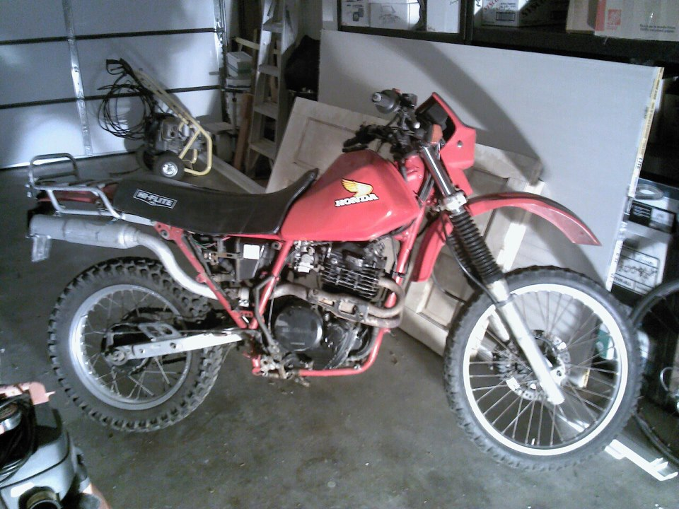
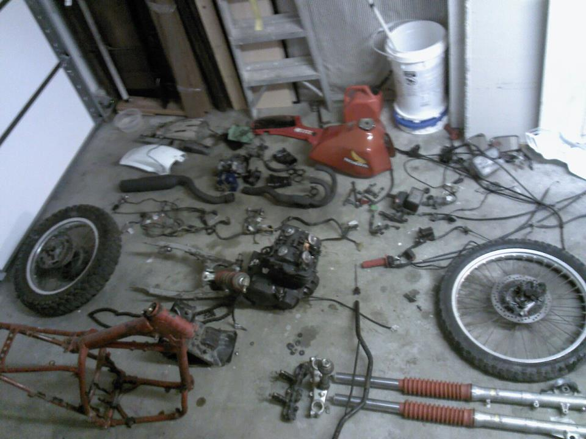
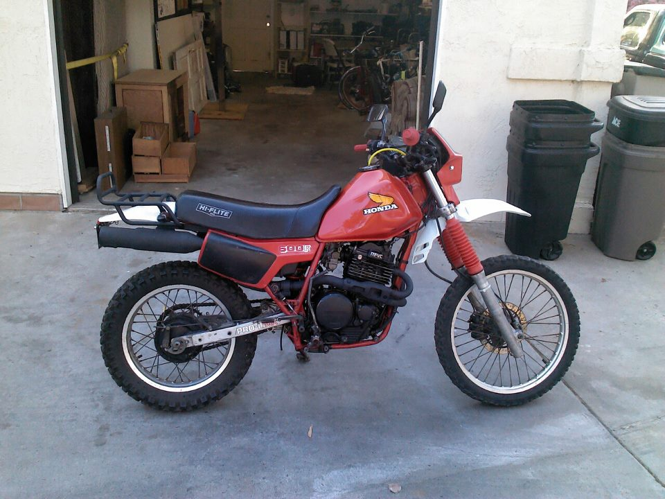
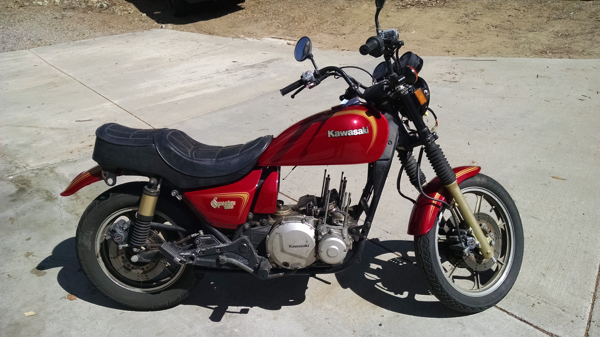
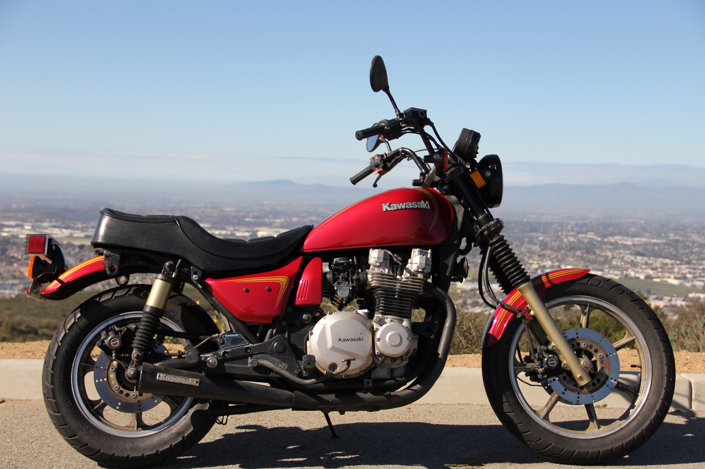
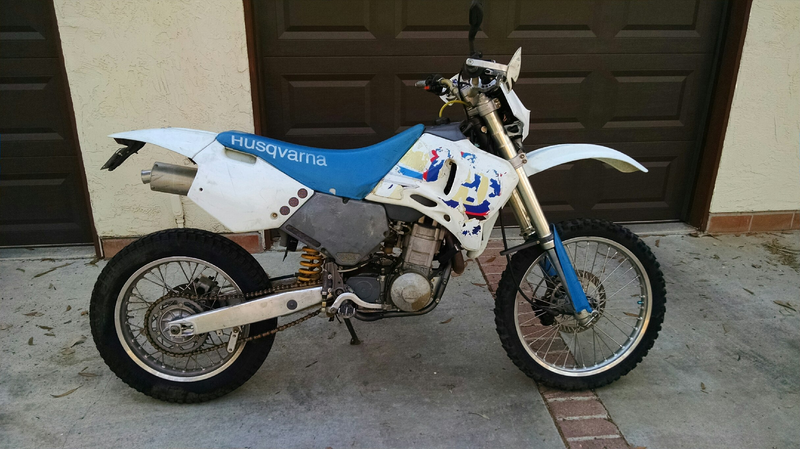
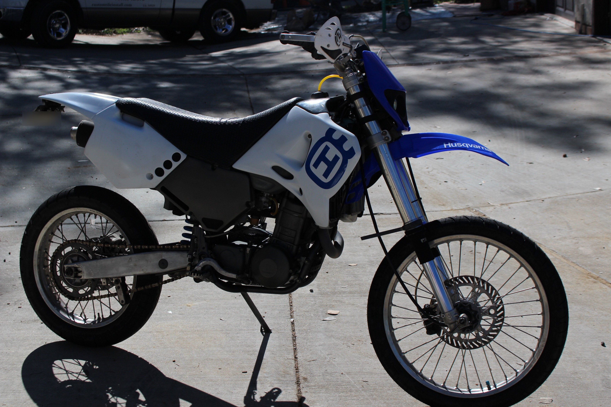
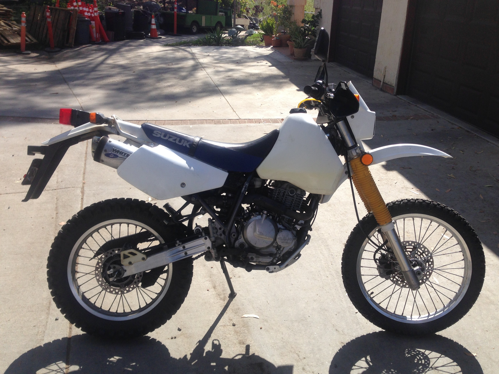
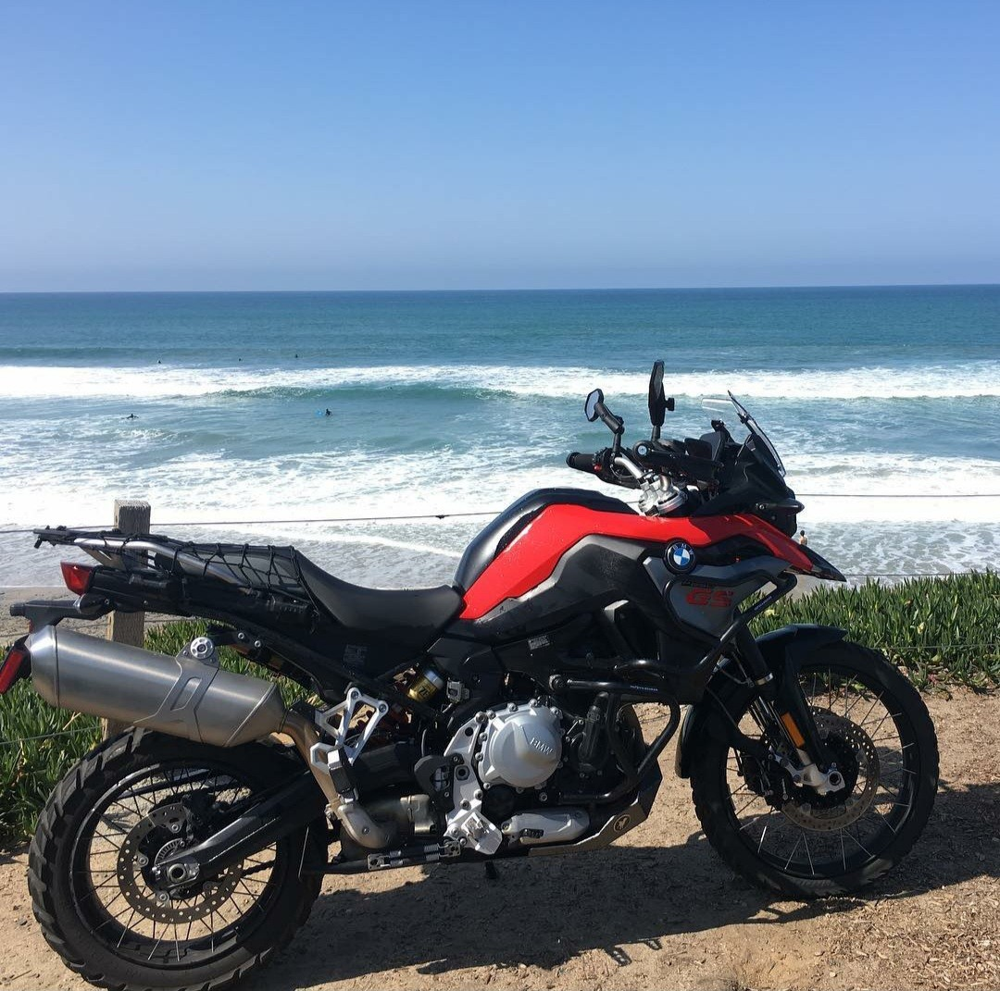
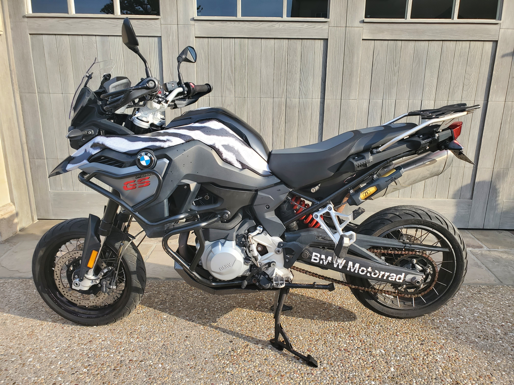
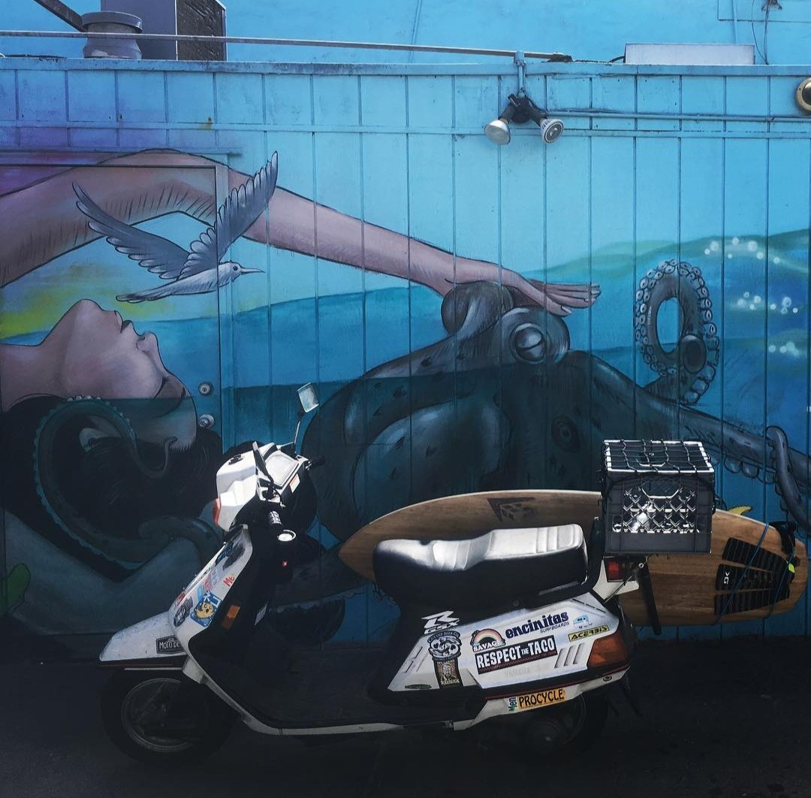